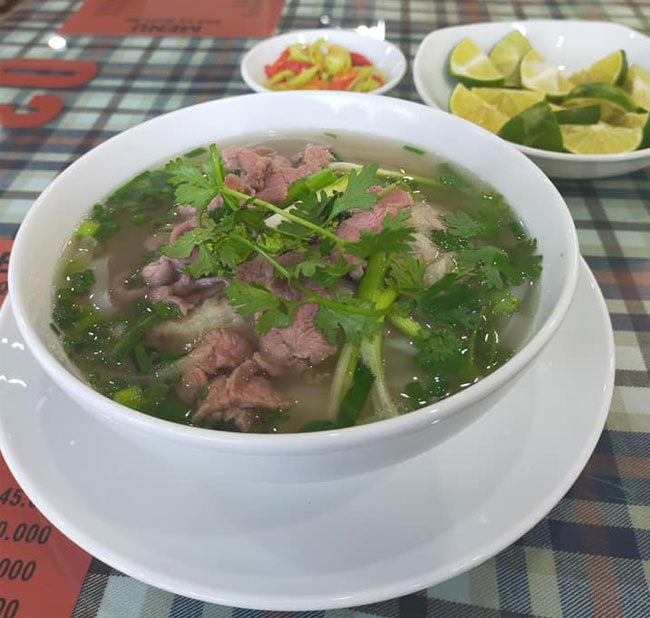

| STT | Tên món ăn |
| 1 | Bánh cuốn Thanh Trì |
| 2 | Phở Gà |
| 3 | Chả cá lã vọng |
| 4 |  Phở bò là một món ăn ngon. Nó được xem như là linh hồn của ẩm thực Việt Nam. Phở có thể được thưởng thức tại bất kỳ đâu, bất kỳ lúc nào khi bạn cảm thấy đói. Và hầu như bà nội trợ nào cũng từng tự tay nấu phở bò chiêu đãi cả gia đình. Nấu phở bò tại nhà vừa ngon, vừa tiết kiệm, lại đảm bảo vệ sinh. Sau đây là cách nấu phở bò ngon tại nhà đơn giản theo công thức phở gia truyền. |